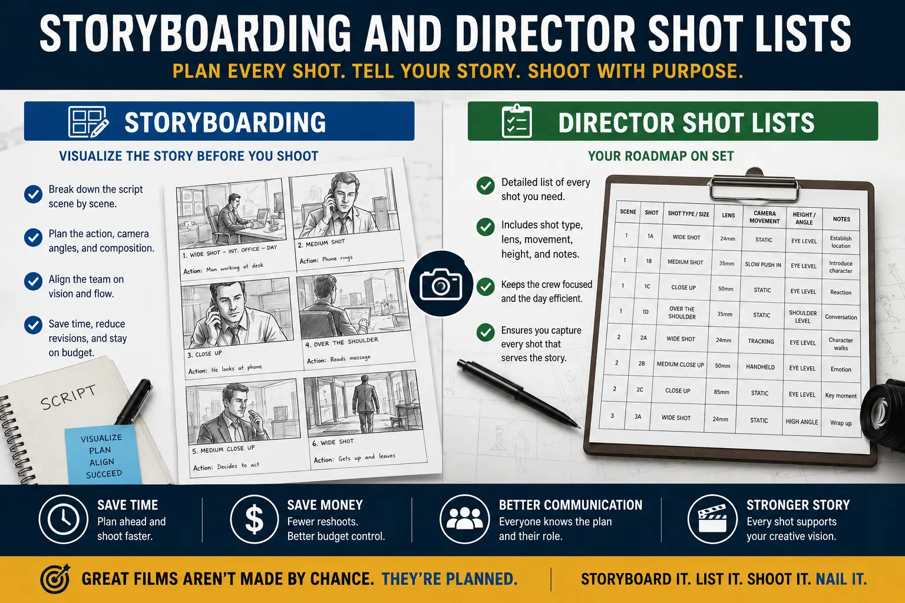
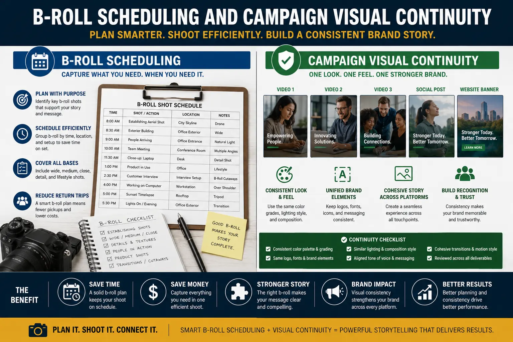

Why Pre-Visuals and Storyboarding Determine Video Shoot Success
The Shoot Does Not Begin on Shoot Day
Every brand video shoot that runs over time, runs over budget, or delivers footage that does not match the brief shares a common origin: insufficient video shoot pre-production. The camera, the crew, the studio, and the talent are the visible parts of a video production — the parts that feel like the work. But the decisions that determine whether those visible parts produce a finished film that serves the brand's commercial objectives are made days and weeks before the shoot, at a desk, in documents that most clients never see and some production teams never build.
Commercial ad storyboarding, director shot lists, corporate video b-roll scheduling, and the full discipline of planning a brand promo shoot from concept to call sheet are not administrative overhead — they are the creative and operational infrastructure that determines shoot-day efficiency, campaign visual continuity, and the quality of the finished work. When this infrastructure is absent or incomplete, the shoot day becomes a problem-solving session rather than an execution session — and problem-solving on set, with a full crew on the clock, is the most expensive way to make decisions that could have been made for free in pre-production.
This guide explains the specific pre-production disciplines that separate successful brand video productions from expensive ones, and why investing the time in creative media direction before the shoot saves multiples of that time — and budget — on the day.
Commercial Ad Storyboarding: The Visual Blueprint of Every Frame
A commercial ad storyboard is the most important pre-production document in any brand video production — and the most consistently underinvested. It is a frame-by-frame visual sequence of the planned advertisement or brand film: panels representing each major shot, with notations on camera angle, subject position and movement, lighting intention, dialogue or voiceover, and the emotional register each frame needs to communicate.
The storyboard's value is not aesthetic — a rough hand-drawn panel communicates the same production information as a polished illustrated one. Its value is alignment: it gives the director, the cinematographer, the brand team, and the client a shared visual reference that means everyone is working toward the same film. Without a storyboard, each member of the crew is working from their own mental interpretation of the brief — and those interpretations will differ in ways that only become visible on set, when changing direction costs time, or in the edit suite, when changing footage costs a reshoot.
What a complete commercial ad storyboard establishes before the shoot:
- The opening frame and the hook. The first shot of any brand video is the most important creative decision in the production — it determines whether the viewer stays or scrolls. The storyboard forces this decision to be made explicitly and evaluated before the shoot, rather than discovered by default when the camera rolls. A storyboard that begins with a weak hook identifies the problem when it can still be solved without cost.
- The shot-to-shot visual logic. A storyboard reveals whether the planned sequence of shots actually tells the intended story — whether there are visual gaps, abrupt transitions, or missing coverage shots that will create editing problems downstream. These gaps are invisible in a written script and obvious in a storyboard panel sequence.
- The coverage requirements. Each storyboard panel implies a camera setup: a position, a lens choice, a lighting configuration. Reading the storyboard as a production document reveals how many unique setups the shoot requires — which directly determines the shoot day schedule, the equipment list, and the studio or location time needed.
- Client alignment before costs are committed. A storyboard reviewed and approved by the brand team before the shoot day is a creative brief that has been visualised and agreed upon. Changes requested after storyboard approval but before the shoot are inexpensive. Changes requested after the shoot are a reshoot. The storyboard is the checkpoint that separates inexpensive from expensive creative decisions.
Director Shot Lists: Converting the Storyboard Into an Operational Plan
A storyboard communicates the creative vision. A director shot list converts that vision into the operational sequence the crew will execute on shoot day. Where the storyboard is ordered by narrative — shot one, shot two, shot three as the story unfolds — the shot list is ordered by production logic: all shots in the same location, with the same lighting configuration, shot consecutively regardless of where they appear in the final edit.
This reordering is where significant production efficiency is created or lost. A shoot that moves through setups in narrative order — filming the opening scene first, then moving equipment across the location for the second scene, then moving back for the third — wastes an enormous proportion of the shooting day in equipment movement and lighting rebuilds. A director shot list that sequences all work in Location A before moving to Location B, and sequences all shots requiring a given lighting setup before striking that setup, can reduce the total crew hours required to capture the same content by 30 to 50 percent.
The components of a production-ready director shot list:
Shot Number and Scene Reference
Each shot is numbered sequentially in production order and cross-referenced to its storyboard panel and script scene. This allows any crew member to immediately locate the relevant pre-production documents for any shot — without the director having to explain context from scratch at each new setup.
Camera and Lens Specification
The planned focal length, camera height, angle, and movement for each shot. Specifying this in advance allows the camera department to prepare the correct equipment for each setup without improvising on set — and ensures that coverage shots cut together cleanly because they were planned to be optically compatible from the start.
Lighting Setup Reference
Each shot flagged with its lighting setup — Setup A, Setup B — so shots sharing the same lighting configuration are batched together. This is the single most impactful efficiency decision in studio production: maximising studio hours by minimising lighting rebuilds, which are the most time-consuming transitions in any controlled shooting environment.
Estimated Duration per Setup
A realistic time estimate for each setup — including the time to position talent, adjust lighting, capture the required takes, and confirm the shot before moving on. These estimates, summed across the full shot list, produce the shoot day schedule. A shot list without time estimates is not a schedule — it is a wishlist.
Planning a Brand Promo Shoot: The Pre-Production Sequence
Planning a brand promo shoot is a sequential process — each stage builds on the one before it, and skipping a stage creates a gap that expresses itself as a problem on shoot day. The full pre-production sequence for a brand promo shoot:
- Creative brief development. Before any visual work begins, the brand's objectives, audience, key message, mandatory elements, and tone of voice need to be captured in a written brief that has been reviewed and agreed by every decision-maker on the brand side. A brief that has not been agreed before pre-production begins will be revised during pre-production — and each revision delays downstream decisions. The creative brief is the foundation everything else is built on; instability in the brief produces instability in everything above it.
- Concept development and reference visual gathering. The creative direction for the shoot — the visual aesthetic, the tone, the narrative approach — is developed from the brief and communicated through reference images and mood boards before the storyboard is drawn. Reference visuals are the fastest alignment tool in pre-production: showing a client three images and asking "closer to this or this?" resolves in seconds what a written description of aesthetic intent could debate for hours.
- Script and storyboard production. The script establishes the spoken and written content — dialogue, voiceover, on-screen text. The storyboard establishes the visual content. Both need to be complete and approved before location scouting or equipment planning begins — because the locations and equipment needed are determined by what the storyboard requires, not the other way around.
- Location scouting and tech recce. The production designer or director visits candidate locations with the storyboard in hand — evaluating each location against the visual requirements of the planned shots, not in the abstract. Natural light direction and quality at the planned shooting time, acoustic properties for any dialogue recording, access logistics for equipment, and permission requirements are all assessed on the recce, not discovered on shoot day.
- Shot list, schedule, and call sheet production. Once locations are confirmed and the storyboard is approved, the director shot list is built, the shoot day schedule is derived from the shot list's time estimates, and the call sheet — the operational document that tells every crew and talent member where to be, when, and with what — is issued at least 48 hours before the shoot.

Maximising Studio Hours: The Financial Case for Pre-Production
Studio time is the most fixed cost in any controlled production environment — the hourly rate runs whether the camera is rolling or the director is rethinking a setup that was never storyboarded. Maximising studio hours through rigorous pre-production is not a creative consideration — it is a financial one, and it is directly quantifiable.
Consider a standard brand promo shoot requiring 12 setups across an 8-hour studio day. A shoot with a complete shot list, pre-approved storyboard, and schedule built from realistic time estimates captures all 12 setups with time for second takes and creative exploration. A shoot that arrives with a written brief but no storyboard and no shot list spends the first hour establishing what the day needs to capture, loses setup time to on-set creative discussions that should have happened in pre-production, and frequently ends the day with 8 or 9 of the 12 planned setups captured — missing the coverage that will create problems in the edit.
The specific pre-production practices that most directly impact studio efficiency:
- Lighting setup batching. Every lighting rebuild in a studio takes between 20 and 45 minutes depending on complexity. A shot list that batches all shots sharing a lighting configuration eliminates unnecessary rebuilds — the single highest-impact efficiency decision in studio production. On an 8-hour day, eliminating three unnecessary lighting rebuilds recovers 60 to 135 minutes of shooting time.
- Talent scheduling. If a shoot involves multiple talent — a founder, a spokesperson, background performers — scheduling their presence to align with their specific shot list sections prevents paid talent waiting on set while unrelated setups are captured. Talent call times derived from the shot list schedule rather than a generic "everyone at 8am" call reduce both talent costs and the social friction of keeping non-shooting talent on set for hours.
- Pre-lighting and set dressing preparation. When the studio is booked from 8am, a production team that begins set dressing and pre-lighting at 7am arrives at the first shot-ready moment significantly earlier than one that begins these processes after the booked start time. Pre-production planning that identifies what can be prepared before the official shoot start — and books the studio time accordingly — directly increases the proportion of the studio day spent shooting versus preparing.
- Shot confirmation protocol. A pre-production decision about how shots are confirmed — who reviews the monitor, what criteria constitute a confirmed take, how many takes are standard versus exceptional — prevents the on-set ambiguity where time is lost to indecision about whether the last take was sufficient. The director who has storyboarded every shot knows exactly what a successful take looks like and confirms it quickly; the director improvising from a vague brief takes more time to evaluate each take because the standard was never defined.
Campaign Visual Continuity: Pre-Production Across Multiple Shoot Days
For brands producing a campaign — multiple videos or a mix of video and photography across more than one production day — campaign visual continuity is the pre-production discipline that ensures all assets feel like they belong to the same visual world, rather than a collection of competently produced but visually inconsistent pieces.
Campaign visual continuity is established in pre-production through a visual style guide — a document produced before the first shoot day that specifies:
- Colour temperature and grading direction. Whether the campaign's visual language is warm or cool, the specific Kelvin range for on-set colour temperature, and the colour grading reference that post-production will work toward. Without this, videos shot across different days or by different camera operators will have subtly different colour casts that undermine the campaign's visual coherence.
- Depth of field and lens character. Whether the campaign uses shallow depth of field for an intimate, premium aesthetic or deeper depth of field for a clean, informational aesthetic — and the specific focal lengths that produce the intended visual character. Mixing lens characters across a campaign creates an inconsistency that viewers register as visual noise even when they cannot name the cause.
- Camera movement conventions. Whether the campaign uses static frames, motivated handheld movement, or designed dolly and slider movements — and in what situations each is appropriate. A campaign that mixes locked-off static shots with energetic handheld in adjacent cuts, without a clear motivation for the change, communicates tonal inconsistency at the editing stage that no grade or music choice can fully resolve.
- Wardrobe and set design specifications. The specific colour palette for talent wardrobe, the brand colours to include and exclude from set design, the prop references that define the campaign's visual world. These specifications, enforced consistently across every shoot day, ensure that a frame from Day 3 of a campaign shoot is visually compatible with a frame from Day 1 — allowing the editor to intercut freely across the full library of captured material.
Corporate Video B-Roll Scheduling: The Coverage That Saves the Edit
Corporate video b-roll scheduling is the pre-production planning of all supplementary footage — the environmental shots, the activity sequences, the detail close-ups, the contextual visuals — that supports and illustrates the primary content of a corporate or brand video. B-roll is the most commonly underscheduled element of a corporate video shoot, and its absence is the most common cause of editing problems that require expensive reshoots.
The challenge with b-roll is that its value is invisible during the shoot — it does not feel as important as the interview or the hero product shot in the moment — but its absence is completely visible in the edit, where every cut away from a talking head to relevant visual context reveals whether the b-roll library is adequate or not. A corporate video editor working with insufficient b-roll resorts to holding on talking head footage longer than the edit rhythm requires, using generic stock footage that does not reflect the brand's actual environment, or cutting awkwardly to maintain visual variety — all outcomes that reduce the finished film's quality and impact.
A complete corporate video b-roll schedule built in pre-production specifies:
- Every b-roll sequence required by the script — every moment where the voiceover or interview refers to a specific person, place, process, or product that needs a corresponding visual
- The location and setup for each b-roll sequence, batched by location to minimise movement between setups
- The estimated duration of footage needed for each sequence — factoring in the edit's planned cut rhythm and the number of angles needed to give the editor cutting options
- The designated time in the shoot schedule for b-roll capture — protected from the pressures of running behind on primary footage, with a clear decision framework for what b-roll is essential versus desirable if time is lost

Reducing Production Mistakes: The Pre-Production Checklist
Reducing production mistakes is the most direct commercial argument for rigorous pre-production investment. Every production mistake has a cost — in reshoots, in client relationship management, in the post-production hours spent working around footage gaps, and in the opportunity cost of a finished film that underperforms the brief because the brief was not fully translated into a production plan.
The pre-production checklist that eliminates the most common and most expensive production mistakes on brand video shoots:
- Brief sign-off with all stakeholders before production begins. The most expensive production mistake is producing the wrong film — a film that is technically accomplished but does not satisfy the brand team because the brief was ambiguous and different stakeholders had different expectations. A written brief, reviewed and signed off by every decision-maker before pre-production begins, eliminates this category of mistake entirely.
- Storyboard approval before location booking or equipment hire. Booking locations and equipment before the storyboard is approved commits production costs to a plan that may change. Storyboard approval first, then commitment of costs, ensures that every production cost is committed in service of an agreed creative plan.
- Tech recce for every location, including familiar ones. A location used on a previous shoot changes — the light in summer is different from the light in winter, renovations alter acoustic properties, new signage creates continuity problems. A tech recce within two weeks of the shoot date catches these changes before they become shoot-day problems.
- Equipment cross-check against the shot list, not against a standard kit list. A standard kit list provides the equipment that most shoots need. The shot list reveals the equipment this specific shoot needs — the specific stabiliser for the planned tracking shot, the specific lens for the planned close-up focal length, the specific lighting modifier for the planned key light quality. Checking equipment against the shot list, not a generic kit, catches the gaps that a standard list misses.
- Contingency planning for the three most likely disruptions. On every shoot, identify the three scenarios most likely to cause schedule disruption — a talent arrival delay, a lighting failure, an unexpected location access restriction — and have a specific response plan for each. Contingency planning in pre-production produces calm, fast responses on shoot day; the absence of contingency planning produces costly improvisation.
- Post-production supervisor review of the shot list before the shoot. The editor who will cut the film reviewing the shot list before the shoot is one of the highest-value pre-production practices available — and one of the least commonly used. An experienced editor reading a shot list can identify missing coverage, flag transition problems, and request additional b-roll sequences that will cost minutes to capture on shoot day and hours to work around in post if they are missing.
Creative Media Direction: The Role That Holds Everything Together
Creative media direction is the discipline that integrates every pre-production element — storyboard, shot list, schedule, visual style guide, b-roll plan, contingency planning — into a coherent production vision that every crew member is working toward. It is the role that translates the brand's commercial objectives into specific visual decisions, and that maintains those decisions as the operational anchor of the shoot day.
The creative director on a brand video production is not the person who decides what looks good on the day — they are the person who decided what the film needed to look like before the day began, and who ensures that every decision on set serves that plan. When the creative director is also improvising the production plan on shoot day, both the creative and operational dimensions of the role are compromised — and the production shows it in the finished work.
The pre-production investments that most directly support effective creative media direction on shoot day:
- A complete, approved storyboard that every crew member has reviewed before arriving on set
- A shot list that sequences the day by production logic rather than narrative order
- A schedule with realistic time estimates that the director believes in and the producer has stress-tested
- A visual style guide that gives the cinematographer, art director, and wardrobe stylist a shared reference without requiring the creative director to verbally brief each department independently on set
- A clear decision framework for what gets cut if the schedule runs behind — protecting the essential shots by explicitly identifying them before the pressure of a running shoot makes that distinction harder to make
Conclusion
The success of a brand video shoot is determined long before the shoot day begins. Every hour invested in video shoot pre-production — in commercial ad storyboarding, in building complete director shot lists, in rigorous planning of the brand promo shoot, in corporate video b-roll scheduling, and in establishing campaign visual continuity before the first setup is lit — directly reduces the cost, the risk, and the error rate of the production while directly increasing the quality, coherence, and commercial effectiveness of the finished film.
Reducing production mistakes is not a defensive objective — it is a creative one. The production that arrives on set with every decision already made is the production that has the freedom to explore, to discover, and to improve on the plan — because the plan exists to be improved upon, not to be established from scratch under the pressure of a running clock.
At The PhD Ads, every production we undertake — from a 15-second social media ad to a full corporate brand film — is built on a complete pre-production foundation: storyboard, shot list, schedule, visual style guide, and b-roll plan, all agreed and approved before a camera is moved into position. Because the shoot is where the pre-production investment pays out — and the edit is where the absence of it shows.
Key Topics
Ready to Produce a Brand Video That Starts Right?
At The PhD Ads, every production begins with complete pre-production — storyboard, shot list, schedule, and visual style guide — so your shoot day delivers exactly what your brand needs, on time and on brief.
Email: team@e2o.in